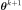
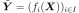
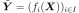
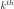
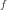

RandomWalkMetropolisHastings¶
- class RandomWalkMetropolisHastings(*args)¶
Random Walk Metropolis-Hastings method.
Refer to Bayesian calibration, The Metropolis-Hastings Algorithm.
- Available constructor:
RandomWalkMetropolisHastings(targetDistribution, initialState, proposal, marginalIndices)
RandomWalkMetropolisHastings(targetLogPDF, support, initialState, proposal, marginalIndices)
- Parameters
- targetDistribution
Distribution Target distribution sampled
- targetLogPDF
Function Target log-density up to an additive constant
- support
Domain Support of the target when defined with targetLogPDF
- initialStatesequence of float
Initial state of the chain
- proposal
Distribution Distribution of the steps of the random walk
- marginalIndicessequence of int, optional
Indices of the components to be updated. If not specified, all components are updated. The number of updated components must be equal to the dimension of proposal.
- targetDistribution
See also
Notes
The random walk Metropolis-Hastings algorithm is a Markov Chain Monte-Carlo algorithm. It draws candidates for the next state of the chain as follows: denoting the current state by , the candidate for  can be expressed as where the distribution of is the provided proposal distribution.
Examples
>>> import openturns as ot >>> import math as m >>> ot.RandomGenerator.SetSeed(0)
Sample from a target distribution defined through its log-PDF (defined up to some additive constant) and its support:
>>> log_density = ot.SymbolicFunction('x', 'log(2 + sin(x)^2) - (2 + cos(3*x)^3 + sin(2*x)^3) * x') >>> support = ot.Interval([0.0], [2.0 * m.pi]) >>> proposal = ot.Normal(0.0, 2.0) >>> initialState = [3.0] >>> sampler = ot.RandomWalkMetropolisHastings(log_density, support, initialState, proposal) >>> sampler.setBurnIn(20) >>> sampler.setThinning(2) >>> x = sampler.getSample(10)
The target distribution can also be a
Distribution. Since allDistributionobjects have agetSample()method, this is only useful in Bayesian settings where we also define a likelihood. The likelihood function penalizes the initially provided target distribution (now viewed as the prior) in order to get the posterior distribution. We sample from the posterior.>>> prior = ot.ComposedDistribution([ot.Uniform(-100.0, 100.0)] * 2) >>> proposal = ot.Normal([0.0] * 2, [0.5, 0.05], ot.IdentityMatrix(2)) >>> initialState = [0.0] * 2 >>> sampler = ot.RandomWalkMetropolisHastings(prior, initialState, proposal) >>> conditional = ot.Bernoulli() >>> data = ot.Sample([[53, 1], [57, 1], [58, 1], [63, 1], [66, 0], [67, 0], ... [67, 0], [67, 0], [68, 0], [69, 0], [70, 0], [70, 0], [70, 1], [70, 1], ... [72, 0], [73, 0], [75, 0], [75, 1], [76, 0], [76, 0], [78, 0], [79, 0], [81, 0]]) >>> observations = data[:, 1] >>> covariates = data[:, 0] >>> fun = ot.SymbolicFunction(['alpha', 'beta', 'x'], ['exp(alpha + beta * x) / (1 + exp(alpha + beta * x))']) >>> linkFunction = ot.ParametricFunction(fun, [2], [0.0]) >>> sampler.setLikelihood(conditional, observations, linkFunction, covariates) >>> alpha_beta = sampler.getSample(10)
Methods
computeLogLikelihood(state)Compute the logarithm of the likelihood w.r.t.
computeLogPosterior(state)Compute the logarithm of the unnormalized posterior density.
Get acceptance rate.
Get the expansion factor.
Get the adaptation factor.
Get the calibration step.
Get the range.
Get the shrink factor.
Accessor to the antecedent RandomVector in case of a composite RandomVector.
Get the length of the burn-in period.
Accessor to the object's name.
Get the conditional distribution.
Accessor to the covariance of the RandomVector.
Get the parameters.
Accessor to the description of the RandomVector.
Accessor to the dimension of the RandomVector.
Accessor to the distribution of the RandomVector.
Accessor to the domain of the Event.
Accessor to the Function in case of a composite RandomVector.
Get the history storage.
getId()Accessor to the object's id.
Get the initial state.
Get the model.
getMarginal(*args)Get the random vector corresponding to the
 marginal component(s).
marginal component(s).Get the indices of the sampled components.
getMean()Accessor to the mean of the RandomVector.
getName()Accessor to the object's name.
Get the observations.
Accessor to the comparaison operator of the Event.
Accessor to the parameter of the distribution.
Accessor to the parameter description of the distribution.
Get the stochastic process.
Get the proposal distribution.
Compute one realization of the RandomVector.
getSample(size)Compute realizations of the RandomVector.
Accessor to the object's shadowed id.
Get the target distribution.
Get the target log-pdf.
Get the target log-pdf support.
Get the thinning parameter.
Accessor to the threshold of the Event.
Tell whether the verbose mode is activated or not.
Accessor to the object's visibility state.
hasName()Test if the object is named.
Test if the object has a distinguishable name.
Accessor to know if the RandomVector is a composite one.
isEvent()Whether the random vector is an event.
setAdaptationExpansionFactor(expansionFactor)Set the expansion factor.
setAdaptationPeriod(period)Set the calibration step.
setAdaptationRange(range)Set the range.
setAdaptationShrinkFactor(shrinkFactor)Set the shrink factor.
setBurnIn(burnIn)Set the length of the burn-in period.
setDescription(description)Accessor to the description of the RandomVector.
setHistory(strategy)Set the history storage.
setLikelihood(*args)Set the likelihood.
setName(name)Accessor to the object's name.
setParameter(parameters)Accessor to the parameter of the distribution.
setProposal(proposal)Set the proposal distribution.
setShadowedId(id)Accessor to the object's shadowed id.
setThinning(thinning)Set the thinning parameter.
setVerbose(verbose)Set the verbose mode.
setVisibility(visible)Accessor to the object's visibility state.
- __init__(*args)¶
- computeLogLikelihood(state)¶
Compute the logarithm of the likelihood w.r.t. observations.
- Parameters
- currentStatesequence of float
Current state.
- Returns
- logLikelihoodfloat
Logarithm of the likelihood w.r.t. observations
 .
.
- computeLogPosterior(state)¶
Compute the logarithm of the unnormalized posterior density.
- Parameters
- currentStatesequence of float
Current state.
- Returns
- logPosteriorfloat
Target log-PDF plus log-likelihood if the log-likelihood is defined
- getAcceptanceRate()¶
Get acceptance rate.
- Returns
- acceptanceRatefloat
Global acceptance rates over all the MCMC iterations performed.
- getAdaptationExpansionFactor()¶
Get the expansion factor.
- Returns
- expansionFactorfloat
Expansion factor for the adaptation
- getAdaptationFactor()¶
Get the adaptation factor.
- Returns
- factorfloat
Current adaptation factor, for inspection.
- getAdaptationPeriod()¶
Get the calibration step.
- Returns
- periodpositive int
Number of samples before the adaptation occurs
- getAdaptationRange()¶
Get the range.
- Returns
- range
Intervalof dimension 1 Range in the description of the method
computeUpdateFactor().
- range
- getAdaptationShrinkFactor()¶
Get the shrink factor.
- Returns
- shrinkFactorfloat
Shrink factor
 for the adaptation
for the adaptation
- getAntecedent()¶
Accessor to the antecedent RandomVector in case of a composite RandomVector.
- Returns
- antecedent
RandomVector Antecedent RandomVector
 in case of a
in case of a
CompositeRandomVectorsuch as: .
.
- antecedent
- getBurnIn()¶
Get the length of the burn-in period.
- Returns
- burninint
Length of the burn-in period, that is the number of first iterates of the MCMC chain which will be thrown away when generating the sample.
- getClassName()¶
Accessor to the object’s name.
- Returns
- class_namestr
The object class name (object.__class__.__name__).
- getConditional()¶
Get the conditional distribution.
- Returns
- conditional
Distribution The conditional argument provided to
setLikelihood()
- conditional
- getCovariance()¶
Accessor to the covariance of the RandomVector.
- Returns
- covariance
CovarianceMatrix Covariance of the considered
UsualRandomVector.
- covariance
Examples
>>> import openturns as ot >>> distribution = ot.Normal([0.0, 0.5], [1.0, 1.5], ot.CorrelationMatrix(2)) >>> randomVector = ot.RandomVector(distribution) >>> ot.RandomGenerator.SetSeed(0) >>> print(randomVector.getCovariance()) [[ 1 0 ] [ 0 2.25 ]]
- getCovariates()¶
Get the parameters.
- Returns
- parameters
Point Fixed parameters of the model
 required to define the likelihood.
required to define the likelihood.
- parameters
- getDescription()¶
Accessor to the description of the RandomVector.
- Returns
- description
Description Describes the components of the RandomVector.
- description
- getDimension()¶
Accessor to the dimension of the RandomVector.
- Returns
- dimensionpositive int
Dimension of the RandomVector.
- getDistribution()¶
Accessor to the distribution of the RandomVector.
- Returns
- distribution
Distribution Distribution of the considered
UsualRandomVector.
- distribution
Examples
>>> import openturns as ot >>> distribution = ot.Normal([0.0, 0.0], [1.0, 1.0], ot.CorrelationMatrix(2)) >>> randomVector = ot.RandomVector(distribution) >>> ot.RandomGenerator.SetSeed(0) >>> print(randomVector.getDistribution()) Normal(mu = [0,0], sigma = [1,1], R = [[ 1 0 ] [ 0 1 ]])
- getDomain()¶
Accessor to the domain of the Event.
- Returns
- domain
Domain Describes the domain of an event.
- domain
- getFunction()¶
Accessor to the Function in case of a composite RandomVector.
- Returns
- function
Function Function used to define a
CompositeRandomVectoras the image through this function of the antecedent:
.
- function
- getHistory()¶
Get the history storage.
- Returns
- history
HistoryStrategy Used to record the chain.
- history
- getId()¶
Accessor to the object’s id.
- Returns
- idint
Internal unique identifier.
- getInitialState()¶
Get the initial state.
- Returns
- initialStatesequence of float
Initial state of the chain
- getLinkFunction()¶
Get the model.
- Returns
- linkFunction
Function The linkFunction argument provided to
setLikelihood()
- linkFunction
- getMarginal(*args)¶
Get the random vector corresponding to the
marginal component(s).- Parameters
- iint or list of ints,

Indicates the component(s) concerned.
 is the dimension of the
RandomVector.
is the dimension of the
RandomVector.
- iint or list of ints,
- Returns
- vector
RandomVector RandomVector restricted to the concerned components.
- vector
Notes
Let’s note
 a random vector and
a random vector and
![I \in [1,n]](../../_images/math/51c159570d2ffbdc697d35ca4247b617daadb12c.svg) a set of indices. If
a set of indices. If  is a
is a
UsualRandomVector, the subvector is defined by . If is a
. If is a
CompositeRandomVector, defined by with  ,
,
 some scalar functions, the subvector is
.
some scalar functions, the subvector is
.Examples
>>> import openturns as ot >>> distribution = ot.Normal([0.0, 0.0], [1.0, 1.0], ot.CorrelationMatrix(2)) >>> randomVector = ot.RandomVector(distribution) >>> ot.RandomGenerator.SetSeed(0) >>> print(randomVector.getMarginal(1).getRealization()) [0.608202] >>> print(randomVector.getMarginal(1).getDistribution()) Normal(mu = 0, sigma = 1)
- getMarginalIndices()¶
Get the indices of the sampled components.
- Returns
- marginalIndices
Indices The marginalIndices argument provided to the constructor
- marginalIndices
- getMean()¶
Accessor to the mean of the RandomVector.
- Returns
- mean
Point Mean of the considered
UsualRandomVector.
- mean
Examples
>>> import openturns as ot >>> distribution = ot.Normal([0.0, 0.5], [1.0, 1.5], ot.CorrelationMatrix(2)) >>> randomVector = ot.RandomVector(distribution) >>> ot.RandomGenerator.SetSeed(0) >>> print(randomVector.getMean()) [0,0.5]
- getName()¶
Accessor to the object’s name.
- Returns
- namestr
The name of the object.
- getObservations()¶
Get the observations.
- Returns
- observations
Sample The observations argument provided to
setLikelihood()
- observations
- getOperator()¶
Accessor to the comparaison operator of the Event.
- Returns
- operator
ComparisonOperator Comparaison operator used to define the
RandomVector.
- operator
- getParameter()¶
Accessor to the parameter of the distribution.
- Returns
- parameter
Point Parameter values.
- parameter
- getParameterDescription()¶
Accessor to the parameter description of the distribution.
- Returns
- description
Description Parameter names.
- description
- getProcess()¶
Get the stochastic process.
- Returns
- process
Process Stochastic process used to define the
RandomVector.
- process
- getProposal()¶
Get the proposal distribution.
- Returns
- proposal
Distribution The distribution from which the transition kernels of the random walk Metropolis-Hastings algorithm is defined
- proposal
- getRealization()¶
Compute one realization of the RandomVector.
- Returns
- aRealization
Point Sequence of values randomly determined from the RandomVector definition. In the case of an event: one realization of the event (considered as a Bernoulli variable) which is a boolean value (1 for the realization of the event and 0 else).
- aRealization
See also
Examples
>>> import openturns as ot >>> distribution = ot.Normal([0.0, 0.0], [1.0, 1.0], ot.CorrelationMatrix(2)) >>> randomVector = ot.RandomVector(distribution) >>> ot.RandomGenerator.SetSeed(0) >>> print(randomVector.getRealization()) [0.608202,-1.26617] >>> print(randomVector.getRealization()) [-0.438266,1.20548]
- getSample(size)¶
Compute realizations of the RandomVector.
- Parameters
- nint,

Number of realizations needed.
- nint,
- Returns
- realizations
Sample n sequences of values randomly determined from the RandomVector definition. In the case of an event: n realizations of the event (considered as a Bernoulli variable) which are boolean values (1 for the realization of the event and 0 else).
- realizations
See also
Examples
>>> import openturns as ot >>> distribution = ot.Normal([0.0, 0.0], [1.0, 1.0], ot.CorrelationMatrix(2)) >>> randomVector = ot.RandomVector(distribution) >>> ot.RandomGenerator.SetSeed(0) >>> print(randomVector.getSample(3)) [ X0 X1 ] 0 : [ 0.608202 -1.26617 ] 1 : [ -0.438266 1.20548 ] 2 : [ -2.18139 0.350042 ]
- getShadowedId()¶
Accessor to the object’s shadowed id.
- Returns
- idint
Internal unique identifier.
- getTargetDistribution()¶
Get the target distribution.
- Returns
- targetDistribution
Distribution The targetDistribution argument provided to the constructor
- targetDistribution
- getTargetLogPDF()¶
Get the target log-pdf.
- Returns
- targetLogPDF
Function The targetLogPDF argument provided to the constructor
- targetLogPDF
- getTargetLogPDFSupport()¶
Get the target log-pdf support.
- Returns
- support
Interval The support argument provided to the constructor
- support
- getThinning()¶
Get the thinning parameter.
- Returns
- thinningint
Thinning parameter: storing only every  point after the burn-in period.
Notes
When generating a sample of size
 , the number of MCMC iterations
performed is
, the number of MCMC iterations
performed is  where
where  is the burn-in period length
and
is the burn-in period length
and  the thinning parameter.
the thinning parameter.
- getThreshold()¶
Accessor to the threshold of the Event.
- Returns
- thresholdfloat
Threshold of the
RandomVector.
- getVerbose()¶
Tell whether the verbose mode is activated or not.
- Returns
- isVerbosebool
The verbose mode is activated if it is True, desactivated otherwise.
- getVisibility()¶
Accessor to the object’s visibility state.
- Returns
- visiblebool
Visibility flag.
- hasName()¶
Test if the object is named.
- Returns
- hasNamebool
True if the name is not empty.
- hasVisibleName()¶
Test if the object has a distinguishable name.
- Returns
- hasVisibleNamebool
True if the name is not empty and not the default one.
- isComposite()¶
Accessor to know if the RandomVector is a composite one.
- Returns
- isCompositebool
Indicates if the RandomVector is of type Composite or not.
- isEvent()¶
Whether the random vector is an event.
- Returns
- isEventbool
Whether it takes it values in {0, 1}.
- setAdaptationExpansionFactor(expansionFactor)¶
Set the expansion factor.
- Parameters
- expansionFactorfloat,
Expansion factor for the adaptation
- setAdaptationPeriod(period)¶
Set the calibration step.
- Parameters
- periodpositive int
Number of samples before the adaptation occurs
- setAdaptationRange(range)¶
Set the range.
- Parameters
- range
Intervalof dimension 1 Range for the adaptation
- range
- setAdaptationShrinkFactor(shrinkFactor)¶
Set the shrink factor.
- Parameters
- shrinkFactorfloat,
Shrink factor
for the adaptation
- setBurnIn(burnIn)¶
Set the length of the burn-in period.
- Parameters
- burninint
Length of the burn-in period, that is the number of first iterates of the MCMC chain which will be thrown away when generating the sample.
- setDescription(description)¶
Accessor to the description of the RandomVector.
- Parameters
- descriptionstr or sequence of str
Describes the components of the RandomVector.
- setHistory(strategy)¶
Set the history storage.
- Parameters
- history
HistoryStrategy Used to record the chain.
- history
- setLikelihood(*args)¶
Set the likelihood.
- Parameters
- conditional
Distribution Required distribution to define the likelihood of the underlying Bayesian statistical model.
- observations2-d sequence of float
Observations required to define the likelihood.
- linkFunction
Function, optional Function
that maps the chain into the conditional distribution parameters.
If provided, its input dimension must match the chain dimension and its
output dimension must match the conditional distribution parameter dimension.
Else it is set to the identity.- covariates2-d sequence of float, optional
Parameters of the linkFunction for each observation . If provided, their dimension must match the parameter dimension of linkFunction.
- conditional
Notes
Once this method is called, the class no longer samples from the distribution targetDistribution or from the distribution defined by targetLogPDF and support, but considers that distribution as being the prior. Let
 be the PDF of the prior at the point
be the PDF of the prior at the point  .
The class now samples from the posterior, whose PDF is proportional to
.
The class now samples from the posterior, whose PDF is proportional to  ,
the likelihood
,
the likelihood  being defined from the arguments of this method.
being defined from the arguments of this method.The optional parameters linkFunction and covariates allow several options to define the likelihood
.
Letting  be the PDF of the distribution conditional:Without linkFunction and covariates the likelihood term reads:
If only the linkFunction is provided:

If both the linkFunction and covariates are provided:

- setName(name)¶
Accessor to the object’s name.
- Parameters
- namestr
The name of the object.
- setParameter(parameters)¶
Accessor to the parameter of the distribution.
- Parameters
- parametersequence of float
Parameter values.
- setProposal(proposal)¶
Set the proposal distribution.
- Parameters
- proposal
Distribution The distribution from which the transition kernels of the random walk Metropolis-Hastings algorithm is defined
- proposal
- setShadowedId(id)¶
Accessor to the object’s shadowed id.
- Parameters
- idint
Internal unique identifier.
- setThinning(thinning)¶
Set the thinning parameter.
- Parameters
- thinningint,

Thinning parameter: storing only every point after the burn-in period.
- thinningint,
Notes
When generating a sample of size
, the number of MCMC iterations
performed is where is the burn-in period length
and the thinning parameter.
- setVerbose(verbose)¶
Set the verbose mode.
- Parameters
- isVerbosebool
The verbose mode is activated if it is True, desactivated otherwise.
- setVisibility(visible)¶
Accessor to the object’s visibility state.
- Parameters
- visiblebool
Visibility flag.